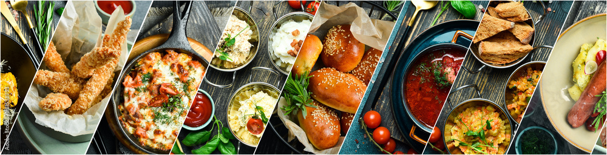

Explore World Flavors Through Taste, No Passport, No Flight, Just Stories.
Food is more than just a meal—it's a story, a journey through cultures, traditions, and generations. World Flavors brings you the essence of global cuisine, allowing you to discover, learn, and experience flavors from around the world, all from the comfort of your home. No need for a passport or plane ticket—just an open heart and a curious palate. Each dish has a history, a unique tale woven into its ingredients and preparation. From time-honored recipes passed down through families to modern twists on traditional flavors, our platform is your gateway to exploring the world through taste.
About the Owner